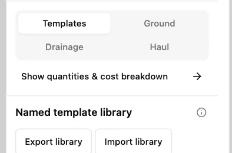
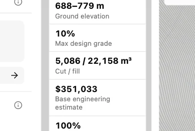
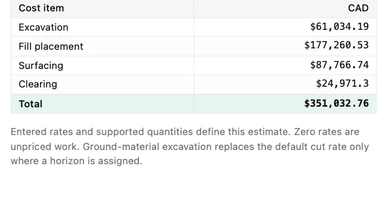

Read earthworks and estimated cost
Use Hillside access in the unedited training project in Engineering workbench. Volumes and rates are illustrative and will change when you edit the road or terrain.
1. Open Engineering
Choose Engineering in the left-hand workflow tabs to access the quantity and cost tools.

2. Show the breakdown
Select Show quantities & cost breakdown. The detail pane switches to Engineering quantities.

3. Read the two earthwork volumes
In Road summary, Cut / fill gives excavation first and fill second. This road has 5,086 m³ of cut and 22,158 m³ of fill. Check Complete sections as well to see how much of the road is covered.

4. Read the base estimate
In Engineering quantities, read the Cost table. Excavation, fill placement, surfacing and clearing total $351,032.76 at the training rates. This is the base estimate; the project’s unpriced crossing still needs separate review.
